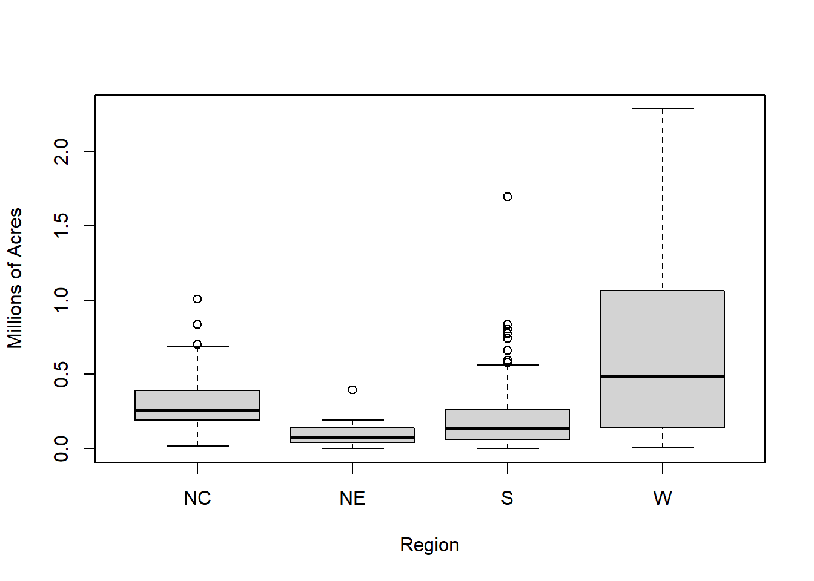

library(here); library(tidyverse);library(knitr)
library(sampling); library(survey)Stratified Sampling
A method to use additional information about the population in the survey design. Lohr Ch 3.
What is Stratified Sampling
Overview
- A sampling technique in which we divide the desired population into subgroups called strata
- Each individual is necessarily in a single strata; no overlap within strata
- All strata consist of the entire population
- An SRS is taken from each strata, then results can be pooled to make inferences about the entire population
Why Use A Stratified Sample?
- Protection from bad samples; less likely of drawing a non representative sample through pure chance
- Want data of known subgroups (i.e., if we are interested in people’s heights, we know that men tend to be taller than women)
- Convenience / cost effectiveness – At what point will this compromise the legitimacy of the study?
- Lowers variance when done properly; variance within each strata is likely lower than the population variance
- you do not have to sample the same fraction of observations in each stratum. If the variability is higher in a certain strata then you can try to reduce the variability of the estimated total by taking more observations from that stratum.
Motivating Example - Estimating the average number of farm acres.
agpop <- read_csv(here("data", "agpop.csv"))In Example 2.6 we took a SRS to find the average number of farm acres per county. Even though our methods of taking an SRS were correct, some areas of the country were over or underrepresented due to the variability in the size of farms in different regions in the country. An example of this would be that western states in the U.S tend to be larger, and therefore tend to have larger farms.
To try and fix this, we can use a stratified sample can give balance to the sample on the stratifying variable, which in this case would be region that the farms are located.
To begin, we can divide our data into four regions (these are the strata):
unique(agpop$region) # the four regions and their names[1] "W" "S" "NE" "NC"Previously we sampled 10% of the population with an SRS, and so to be able to compare our results with our stratified sample, we should sample 10% of the population from each strata through four separate and independent SRS’s.
The process to do this would be to take the four regions, number off the counties that are in the region, calculate what number of counties is 10% of the total number of counties in the region, and select that many numbers from the list of numbered counties.
Details on how to do this in R is covered in a later section. For now we will use the
agstratdataset from the book as the stratified sample.
agstrat <- read_csv(here("data", "agstrat.csv"))
Exploring the distribution of farm acreage in 1992 by region.
boxplot(acres92/10^6 ~ region, data = agstrat,
xlab = "Region", ylab = "Millions of Acres")
The Northeast has the lowest median and the smallest variance. The West has the highest median and the highest mean and variance. The distribution of farm acreage appears to to be positively skewed in each region.
The summary statistics \(\bar{y}_{h}\) and \(s^{2}_{h}\) can be calculated using R after grouping by the stratification variable.
table3.1 <- agstrat %>%
group_by(region) %>%
summarize(y.bar.h = mean(acres92),
s2.h = var(acres92),
n.h = n())
counties_in_pop <- table(agpop$region)
new_table3.1 <- cbind(table3.1, counties_in_pop)
new_table3.1 <- select(new_table3.1, -Var1) # drop the extra variable
colnames(new_table3.1) <- c("Region", "Sample Avg in Region", "Sample Variance in Region",
"Number of Counties in Region", "Number of Counties in Population")
kable(new_table3.1)| Region | Sample Avg in Region | Sample Variance in Region | Number of Counties in Region | Number of Counties in Population |
|---|---|---|---|---|
| NC | 300504.16 | 29618183543 | 103 | 1054 |
| NE | 97629.81 | 7647472708 | 21 | 220 |
| S | 211315.04 | 53587487856 | 135 | 1382 |
| W | 662295.51 | 396185950266 | 41 | 422 |
Lohr Table 3.1. Summary statistics for each stratum
These summary statistics can be used to calculate estimates of the total number of farms acres, and estimated variance of the total within each of the four stratum (Table 3.2 below)
Because we took an SRS in each stratum, we can use the following equations to estimate population quantities for each stratum.
\(\hat{\tau_{h}} = N * \bar{y}_{h} \quad \mbox{ and } \quad \hat{V}(\hat{\tau}_{h}) = N_{h}^{2} * \hat{V}(\bar{y}_{h})\)
- We can estimate the total number of acres devoted to farming in the United States in 1992 by summing the estimated totals for each stratum.
- The variance of the total is the sum of the variances of the estimated stratum totals.
More information on how to do this in the next section.
Gain from stratification
- Observations within strata are more similar to each other, than they are to the population as a whole
- reduction in variance in individual strata can lead to a reduced variance for the population estimate.
From the Farm example, this ratio was calculated to be 0.75. That means we would only need 0.75*300 = 225 observations from a stratified sample to obtain the same precision as from a SRS of 300.
By sampling within strata, we are “borrowing” information from other similar observations.
Theory of Stratified Sampling
Notation and Formulas used in Stratified Random Sampling
- To take a stratified random sample, we take a SRS from each stratum, so that \(n_h\) units are sampled from the \(N_h\) population units in stratum \(h\).
- Statistics and sample sizes for stratum \(h\) have subscript \(h\) where \(h=1 \ldots H\) index strata
- When a statistic has the subscript \(str\), that means that the statistic is the combined estimate across all stratas.
- \(\bar{y}_{str}\) is a weighted average of the sample stratum means
- \(\hat{p}_{str}\) estimated proportion of population units having a specified characteristic. Recall a proportion is a mean of a variable that takes on the values 0 and 1.
- \(y_{hj}\) value of the \(j\)th unit in strata \(h\)
- \(\sum_{j=1}^{n_{h}}\) means to sum of all units in strata \(h\)
- \(\sum_{j}\) means to sum over the units that were sampled from in strata \(h\)
- \(\sum_{h}\) is shorthand for \(\sum_{H=1}^{h}\)
| Measure | Population \((\theta)\) | Sample \((\hat{\theta})\) |
|---|---|---|
| Sample size in strata \(h\) | \(N_{h}\) | \(n_{h}\) |
| Overall sample size | \(N = \sum^{H}_{h=1} N_{h}\) | \(n = \sum^{H}_{h=1} n_{h}\) |
| Var(y) in strata \(h\) | \(\sigma_{h}^2 = \frac{1}{N_{h}-1}\sum_{j=1}^{N_{h}}(y_{hj}-\mu_{h})^2\) | \(s_{h}^2 = \frac{1}{n_{h}-1}\sum_{j}(y_{hj}-\bar{y}_{h})^2\) |
| Total in strata \(h\) | \(\tau_{h} = \sum_{j=1}^{N_{h}} y_{hj}\) | \(\hat{\tau}_{h} = N_{h}\bar{y_h}\) |
| Overall total | \(\tau = \sum_{h=1}^{H} \tau_{h}\) | \(\hat{\tau}_{str} = \sum_{h=1}^{H}N_{h}\bar{y}_{h}\) |
| Mean in strata \(h\) | \(\mu_{h} = \frac{\tau_{h}}{N_{h}}\) | \(\bar{y}_{h} = \frac{1}{n_{h}}\sum_{j} y_{hj}\) |
| Overall mean | \(\mu = \frac{\tau}{N}\) | \(\bar{y}_{str} = \sum_{h=1}^{H} \frac{N_{h}}{N}\bar{y}_{h}\) |
| Proportion in strata \(h\) | \(p_{h} = \mu_h\) | \(\bar{y}_h = \hat{p}_h\) |
| Variance of \(p_{h}\) | \(\sigma_h^2=\frac{N_h}{N_h-1} p_h(1-p_h)\) | \(s_h^2=\frac{n_h}{n_h-1} \hat{p}_h(1-\hat{p}_h)\) |
| Overall proportion | \(p_{str} = \sum_{h=1}^{H} \frac{N_h}{N} p_h\) | \(\hat{p}_{str} = \sum_{h=1}^{H} \frac{N_h}{N}\hat{p}_h\) |
| Measure | Population \((\theta)\) | Sample \((\hat{\theta})\) |
|---|---|---|
| Sample size in strata \(h\) | number of population units in stratum h | sample size taken in stratum h |
| Overall sample size | total population size, from all strata | total sample size, from all strata |
| Total in strata \(h\) | population total in strata h | estimated population total in stratum h |
| Overall total | population total | estimated population total |
| Mean in strata \(h\) | population mean in strata h | sample mean in stratum h |
| Overall mean | population mean | weighted average of the sample stratum means |
| Variance of the mean | population variance in stratum h | sample variance in stratum h |
| Proportion in strata \(h\) | ||
| Variance of proportion | ||
| Overall proportion |
With estimated variances;
- Within strata total \(\hat{V}(\hat{\tau}_{h}) = (1-\frac{n_h}{N_h})N^2 \frac{s^2_h}{n_h}\)
- Within strata mean \(\hat{V}(\bar{y}_{h}) = \frac{1}{N^2}V(\hat{\tau}_{h})\)
- Overall population total \(\hat{V}(\hat{\tau}_{str}) = \sum_{h=1}^H (1-\frac{n_h}{N_h})N^2 \frac{s^2_h}{n_h}\)
- Population proportion \(\hat{V}(\hat{p}_{str}) = \sum_{h=1}^H (1-\frac{n_h}{N_h}) (\frac{N_h}{N})^2 \frac{\hat{p}_h (1-\hat{p}_h)}{n_h-1}\)
- Estimated total number of population units having a specified characteristic: \(\hat{t}_{\it{str}} = \sum_{h=1}^H N_h \hat{p}_h\)
Confidence Interval for Stratified Random Sample
If either the sample sizes within each stratum are large or the sampling design has a large number of strata, then the confidence interval for the population mean \(\bar{y}\mu\) is:
\[ \bar{y}_{str}= \pm z_{\alpha /2 } SE (\bar{y}_{str})\]
However, most survey packages use a \(t_{n-H}\) distribution instead of using the normal assumption.
Example: Estimate the total number of farm acres in 1992 (Table 3.2)
The best way to understand an equation, is to try to use it in a calculation.
- Calculate summary statistics for each region. This was seen earlier as
new_table3.1
strata.summary.stats <- agstrat %>%
group_by(region) %>%
summarize(y.bar.h = mean(acres92),
s2.h = var(acres92),
n.h = n()) - Calculate Population region sizes, add this vector to the data frame created above.
(region.size <- agpop %>% group_by(region) %>% tally())# A tibble: 4 × 2
region n
<chr> <int>
1 NC 1054
2 NE 220
3 S 1382
4 W 422strata.summary.stats$N.h <- region.size$n
strata.summary.stats# A tibble: 4 × 5
region y.bar.h s2.h n.h N.h
<chr> <dbl> <dbl> <int> <int>
1 NC 300504. 29618183543. 103 1054
2 NE 97630. 7647472708. 21 220
3 S 211315. 53587487856. 135 1382
4 W 662296. 396185950266. 41 422- Calculate the sample total \(\hat{\tau}_{h} = N_{h}\bar{y_h}\).
strata.summary.stats$tau.hat.h <- strata.summary.stats$y.bar.h * strata.summary.stats$N.h
strata.summary.stats# A tibble: 4 × 6
region y.bar.h s2.h n.h N.h tau.hat.h
<chr> <dbl> <dbl> <int> <int> <dbl>
1 NC 300504. 29618183543. 103 1054 316731380.
2 NE 97630. 7647472708. 21 220 21478558.
3 S 211315. 53587487856. 135 1382 292037391.
4 W 662296. 396185950266. 41 422 279488706.- Calculate the within-strata variance of this total \(\Big(1 - \frac{n_{h}}{N_{h}}\Big)N^{2}_{h}\frac{s^{2}_{h}}{n_{h}}\).
strata.summary.stats <- strata.summary.stats %>%
mutate(var.tau.hat.h =
(1 - n.h/N.h)*(N.h^2)*(s2.h/n.h)
)
strata.summary.stats# A tibble: 4 × 7
region y.bar.h s2.h n.h N.h tau.hat.h var.tau.hat.h
<chr> <dbl> <dbl> <int> <int> <dbl> <dbl>
1 NC 300504. 29618183543. 103 1054 316731380. 2.88e14
2 NE 97630. 7647472708. 21 220 21478558. 1.59e13
3 S 211315. 53587487856. 135 1382 292037391. 6.84e14
4 W 662296. 396185950266. 41 422 279488706. 1.55e15- Calculate the overall total \(\hat{\tau}_{str}\) and variance \(\hat{V}\big(\hat{\tau}_{str}\big)\) by summing these values across the strata.
(tau.hat.str <- sum(strata.summary.stats$tau.hat.h))[1] 909736035(V.tau.hat.str <- sum(strata.summary.stats$var.tau.hat.h))[1] 2.541899e+15The estimated total number of acres devoted to farming is 909,736,035, with standard error 50,417,248. These numbers match those found in Table 3.2.
Sampling Weights
How are weights calculated?
Sampling weights in the context of Stratified Sampling function almost identically as they did in SRS.
For any unit \(j\) in a stratum \(h\), a sampling weight(\(w_{hj}\)) is still the inverse of an inclusion probability(\(\pi_{hj}\)). However, because the population of a stratum, \(N_h\), and the size of a sample of a stratum, \(n_h\), don’t have to be constant within a population of \(H\) strata, each stratum will have different sampling weights.
\(w_{hj}= \frac{1}{\pi_{hj}}=\frac{N_h}{n_h}\)
How are weights used?
The weights are directly applied to the values of \(y\) before being used in any calculations.
\[\hat{t}_{str}= \sum_{h=1}^H\sum_{j\in S_h} w_{hj}y_{hj}\]
is the estimator of the total population using a stratified sample, and
\[\bar{y}_{str}= \frac{\hat{t}_{str}}{\sum_{h=1}^H\sum_{j\in S_h} w_{hj}}= \frac{\sum_{h=1}^H\sum_{j\in S_h} w_{hj}y_{hj}}{\sum_{h=1}^H\sum_{j\in S_h} w_{hj}}\]
is the estimate for a population mean using stratified sampling.
Example: Re-Estimate the total number of farm acres in 1992 using sample weights
Note, this agriculture example was designed so that each county in the US had approximately the same probability of appearing in the sample.
- Calculate stratum weights. Sometimes this is given to you, othertimes you have to calculate it.
strat.weights <- data.frame(
region = table(agpop$region) %>% names(),
N.h = table(agpop$region) %>% as.vector(),
n.h = table(agstrat$region) %>% as.vector()
)
strat.weights$wt <- strat.weights$N.h / strat.weights$n.h
strat.weights region N.h n.h wt
1 NC 1054 103 10.23301
2 NE 220 21 10.47619
3 S 1382 135 10.23704
4 W 422 41 10.29268- Merge those weights back onto the sample data, joining by region.
agstrat <- agstrat %>% left_join(strat.weights)
table(agstrat$wt)
10.2330097087379 10.237037037037 10.2926829268293 10.4761904761905
103 135 41 21 This last table is used to confirm that the number of weighting values equals the strata sample sizes.
- Calculate the weighted values \(w_{hj}y_{hj}\). The weights need to be applied to the individual data points, \(y_{jh}\), then all the above calculations can occur again.
agstrat$wtd.acres92 <- agstrat$acres92 * agstrat$wt - Calculate the weighted totals and variances within strata. Include the population and sample sizes within each strata in the
group_bystatement so it can remain on the grouped dataset for later use.
(wt.str.sum.stats <- agstrat %>%
group_by(region, N.h, n.h) %>%
summarize(y.bar.h = sum(wtd.acres92)/n.h,
s2.h = (1/(n.h-1))*sum((wtd.acres92-y.bar.h)^2)
) %>%
unique() # this removes duplicate rows created in the variance function
)# A tibble: 4 × 5
# Groups: region, N.h, n.h [4]
region N.h n.h y.bar.h s2.h
<chr> <int> <int> <dbl> <dbl>
1 NC 1054 103 3075062. 3.10e12
2 NE 220 21 1022788. 8.39e11
3 S 1382 135 2163240. 5.62e12
4 W 422 41 6816798. 4.20e13- Calculate within strata totals and variances \(\hat{\tau}_{h}\) and \(\hat{V}(\hat{\tau}_{h})\).
(wt.str.sum.stats <- wt.str.sum.stats %>%
mutate(tau.hat.h = y.bar.h * N.h ,
var.tau.hat.h = (1 - n.h/N.h)*(N.h^2)*(s2.h/n.h)))# A tibble: 4 × 7
# Groups: region, N.h, n.h [4]
region N.h n.h y.bar.h s2.h tau.hat.h var.tau.hat.h
<chr> <int> <int> <dbl> <dbl> <dbl> <dbl>
1 NC 1054 103 3075062. 3.10e12 3241115284. 3.02e16
2 NE 220 21 1022788. 8.39e11 225013466. 1.75e15
3 S 1382 135 2163240. 5.62e12 2989597592. 7.17e16
4 W 422 41 6816798. 4.20e13 2876688634. 1.65e17- Calculate the overall total \(\hat{\tau}_{str}\) and variance \(\hat{V}\big(\hat{\tau}_{str}\big)\) by summing these values across the strata.
(tau.hat.str <- sum(wt.str.sum.stats$tau.hat.h))[1] 9332414976(V.tau.hat.str <- sum(wt.str.sum.stats$var.tau.hat.h))[1] 2.682133e+17Note. This value for
tau.hat.strdoes not match what the book says. Not sure where the error is at.
⭐ You try it Caribou weights
In the caribou example, strata A had N=400 and n=98, so the sampling weight is 400/98 or 4.08.
caribou$w.hj <- caribou$N.h/ caribou$n.h
caribou %>% select(Stratum:n.h, w.hj) Stratum N.h n.h w.hj
1 A 400 98 4.081633
2 B 30 10 3.000000
3 C 61 37 1.648649
4 D 18 6 3.000000
5 E 70 39 1.794872
6 F 120 21 5.714286Note: We cannot re-estimate the total number of caribou using the information provided because we are given the summary statistics \(\bar{Y}_h\), not the raw data \(y_{hj}\). To re-estimate the total number of caribou we would need to multiply the weights \(w_{h}\) to \(y_{hj}\).
Allocation Methods
Designing the survey is the most important part of using a survey in research. If the survey is badly designed, then no amount of analysis will yield the needed information.
Simple random sample was easy - you just need to figure out the end sample size. For stratified sampling, we need to define the strata, and the sample size within each strata.
- Probability selection (n/N) the same for each stratum (n being the number of sampling units in the stratum and N being the population of the stratum)
- Weight of each sample will be the same
- Stratified sampling estimate of the population mean is the average of all observations
- Self-weighting: every unit in sample carries the same weight
- When the strata are large enough, \(Var(\bar{y}_{str})\) will almost always be less than the population variance of \(Var(\bar{y}_{srs})\) of the same sample size
- The more the means of the strata differ, the more precision you will gain from using proportional allocation.
- When the variances are roughly the same across all strata, proportional allocation is likely your best bet for increasing precision
- It is best to use when the sampling units are from corporations, cities, hospitals, or wherever the size varies largely. You want to get the most from the least cost.
- E.g. If we wanted to estimate trade with Europe, the variance among large corporations would be larger than when compared to small corporations, so we’d sample more large corporations
- When the variances of the strata are significantly different, optimal allocation lowers the cost
- When certain strata are more expensive to sample than others, optimal allocation may be useful
- Generally, heavily sample from a stratum if:
- Stratum is large
- Variance of stratum is large
- Its cheap
Optimization methods:
- Disproportional allocation: Allocation of sampling units to strata so that the sampling fractions \(\frac{n_h}{N_h}\) are unequal
- Oversampling: Selecting more observations in a stratum than would be called for in proportional allocation. An oversampled stratum has \(\frac{n_h}{N_h} \gt \frac{n}{N}\)
- Neyman Allocation: special case of optimal allocation where the costs in the strata are about equal, but the variances are not
- If variances within strata are specified correctly, Neyman Allocation will give a smaller variance than proportional allocation
Which allocation to use?
Proportional Allocation
- should be used when you want your sample to be a mini version of the population.
- the only knowledge about your data that is needed is N, making this a better option for some survey designs that might not have information about variances
Disproportional Allocation:
- should be used when you want to oversample one or more of the strata
- to guarantee precision in a certain strata
Selecting Strata
Defining Strata
- Stratified sampling with proportional allocation improves the precision for every variable y measured in the survey.
- We want the means across strata to be as different as possible
- We do this to minimize the variability within strata
- Most surveys measure more than one variable, so any stratification design should keep many characteristics of interest in mind.
- If several stratification designs are applicable, use the design associated with the most important responses.
How Many Strata?
- The more information you have, the more strata you should use.
- If there is a lot of prior information known about the target population, then an SRS may be more convenient.
- Appropriate number of strata depends on a lot
- The difficulty in constructing a sampling frame with stratifying information
- Cost of Stratifying
- General rule: The less information, the fewer strata you should use.
- Use an SRS when you know practically nothing about the target population.
- However, you can usually collect preliminary data
- The information used to construct strata does not need to be perfect because misclassification does not affect the validity of estimates from the survey because their properties depend only on the stratification that was used.
- However, you can usually collect preliminary data
- Use an SRS when you know practically nothing about the target population.
Example: Estimating homeless population from NYC
New York City takes an annual survey to estimate the homeless population and collect data on their characteristics. The survey is conducted on one of the first 10 nights in January; all data is collected in one night to reduce the chances of double counting.
The sampling plan needs to meet two criteria:
- Provide an accurate estimate on the size of the unsheltered population (data on sheltered homeless is collected from the shelters, so population size is known)
- Contact as many unsheltered homeless as possible.
NYC decided to use a stratified random sample, to do this they:
- Partitioned the city into 7000 areas
- Using previous years’ data and other available resources, classified each area as either “high density” or “low density”
- High density is defined as an area expected to contain at least 1 homeless person, save for in Manhattan or the subway system, where we would expect to find at least two homeless people there
- Low density is defined as not high density
This results in 12 strata: one high and one low density stratum for each of the 5 boroughs plus the subway system.
All areas in high density areas were canvassed, while they took a random sample of areas in low density strata
The results are statistically valid because a random sample of areas is sampled from each of the low density stratum
There is some measurement error due to 3 things:
- Some homeless people are in dark places and are not seen
- Some areas are deemed unsafe so no samples can be taken
- Cannot always tell if an individual is homeless or not
Summary
This section setup the motivation for why using the stratified sampling method may be beneficial.
Once SRS’s are taken from each strata, the results can be pooled to make inferences about the entire population (the ultimate goal).
Don’t have to sample the same % from each strata
Could see a greater reduction in variance of the overall estimate with an increased sampling fraction from strata with high variance.
Stratification is an SRS of size n_h from each stratum h
- Relative pop size for each stratum: N_h/N
- Probability for unit i in stratum h: n_h/N_h
- Sampling weight: N_h/n_h
- To estimate the population total using a stratified random sample, let \(\hat{tau_h}\) estimate the population total in stratum \(h\).
3 Design Issues When Stratifying
- Strata Definitions
- Total sample size
- Proper Allocation Method
Allocation Methods
- Proportional allocation focuses on reducing the variance of the final estimate.
- The same sampling fraction is used in each stratum
- Almost always results in smaller variances for estimated means and totals than SRS
- Disproportional allocation
- May be preferred if some strata should have higher sampling fractions than others ex. If wanting to have larger sample sizes for strata with minority populations or for strata with large companies
- Optimal Allocation
- Specifies taking larger sampling fractions in strata that have larger variances or lower sampling costs
Using R
Selecting a Stratified Random Sample
Using the strata function from the sampling package
- Sort the data by the stratification variable
agpop.sorted <- agpop %>% arrange(region)- Specify the desired within-strata sample sizes \(n_{k}\).
n.k <- c(103, 21, 135, 41)- Create the sampling index of records to select using the
stratafunction with arguments specifying the strata names, strata size, and sampling method within strata.
strat.idx <- sampling::strata(data = agpop.sorted, stratanames = "region",
size = n.k, method = "srswor")⚠️ Package conflicts can occur with the strata function. If it is not working for you, use the sampling::strata method of calling the function to ensure you are using the correct version of the strata function from the sampling package.
- Extract the data records that correspond to the sampling index.
ag.str <- getdata(agpop.sorted, strat.idx)
head(ag.str) county state acres92 acres87 acres82 farms92 farms87 farms82
15 CASS COUNTY IA 347353 333083 345726 905 942 1087
36 FREMONT COUNTY IA 302352 308796 306786 596 719 771
37 GREENE COUNTY IA 366927 353283 359023 851 948 1054
44 HENRY COUNTY IA 225835 231617 239403 795 893 963
45 HOWARD COUNTY IA 260781 269285 278861 881 938 1055
48 IOWA COUNTY IA 321285 329705 361465 977 1057 1150
largef92 largef87 largef82 smallf92 smallf87 smallf82 region ID_unit
15 70 52 38 55 66 72 NC 15
36 91 72 51 37 59 50 NC 36
37 78 52 38 51 81 89 NC 37
44 31 20 18 57 69 63 NC 44
45 40 33 30 68 64 70 NC 45
48 43 32 36 58 64 62 NC 48
Prob Stratum
15 0.09772296 1
36 0.09772296 1
37 0.09772296 1
44 0.09772296 1
45 0.09772296 1
48 0.09772296 1- Calculate the sampling weights using the inclusion probabilities (these were created as the variable
Probwhen you used thestratafunction)
ag.str$wt <- 1/ag.str$Prob
head(ag.str) county state acres92 acres87 acres82 farms92 farms87 farms82
15 CASS COUNTY IA 347353 333083 345726 905 942 1087
36 FREMONT COUNTY IA 302352 308796 306786 596 719 771
37 GREENE COUNTY IA 366927 353283 359023 851 948 1054
44 HENRY COUNTY IA 225835 231617 239403 795 893 963
45 HOWARD COUNTY IA 260781 269285 278861 881 938 1055
48 IOWA COUNTY IA 321285 329705 361465 977 1057 1150
largef92 largef87 largef82 smallf92 smallf87 smallf82 region ID_unit
15 70 52 38 55 66 72 NC 15
36 91 72 51 37 59 50 NC 36
37 78 52 38 51 81 89 NC 37
44 31 20 18 57 69 63 NC 44
45 40 33 30 68 64 70 NC 45
48 43 32 36 58 64 62 NC 48
Prob Stratum wt
15 0.09772296 1 10.23301
36 0.09772296 1 10.23301
37 0.09772296 1 10.23301
44 0.09772296 1 10.23301
45 0.09772296 1 10.23301
48 0.09772296 1 10.233015b. Check that the sampling weights sum to the stratum population sizes.
ag.str %>% group_by(region) %>% summarize(sum.wts = sum(wt))# A tibble: 4 × 2
region sum.wts
<chr> <dbl>
1 NC 1054
2 NE 220
3 S 1382
4 W 422table(agpop.sorted$region)
NC NE S W
1054 220 1382 422 Computing Statistics from a Stratified Random Sample
1. Setup the information for the survey design.
a. Specify weights
We created the weights in the dataset in the the last step.
b. Specify fpc
We need to create a vector of fpc’s that are equal to the strata population size. In a SRS, we used fpc = rep(N,n). This create a vector that contains the value N, repeated n times. In this case, we need to match the strata population size to each record from that strata.
Option 1: Create a vector that repeats the values in the vector N.k, each n.k times.
option1.fpc <- rep(N.k, n.k)Option 2: Merge the pop sizes onto the sample data using region as a joining key
(pop.strata.sizes <- table(agpop.sorted$region) %>% data.frame()) Var1 Freq
1 NC 1054
2 NE 220
3 S 1382
4 W 422pop.strata.sizes <- rename(pop.strata.sizes, region = Var1, popsize = Freq)
ag.str.opt2 <- ag.str %>% left_join(pop.strata.sizes)2. Call svydesign
agpop.str.dsgn <- svydesign(id = ~1, strata = ~region, weights = ~wt,
fpc = ~popsize,
# fpc = option1.fpc # This would be Option 1
data= ag.str.opt2)3. Calculate total, SE and CI
Note the degrees of freedom for a CI under a stratified sample is \(n-H\), which can be extracted from the svydesign object using the degf function.
(str.total <- svytotal(~acres92, agpop.str.dsgn)) total SE
acres92 958967357 56164159confint(str.total, level = .95, df = degf(agpop.str.dsgn)) 2.5 % 97.5 %
acres92 848435688 1069499025
Example: Farmland in 1992
The book’s provided agstrat data set is a stratified random sample with proportional allocation. The weights are contained in a variable called strwt. Let’s re-estimate the total amount of farmland using the sampling package.
- Calculate the vector of population sizes for the fpc using Option 2 above.
agstrat <- agstrat %>% left_join(pop.strata.sizes)
table(agstrat$popsize) # confirm
220 422 1054 1382
21 41 103 135 - Define the survey design
agstrat.dsgn <- svydesign(id = ~1, strata = ~region,
weights = ~strwt,
fpc = ~popsize,
data= agstrat)- calculate the stratified total with CI.
(str.total <- svytotal(~acres92, agstrat.dsgn)) total SE
acres92 909736036 50417248confint(str.total, level = .95, df = degf(agstrat.dsgn)) 2.5 % 97.5 %
acres92 810514350 1008957721Calculating stratum means and variances
Instead of using the formulas as shown in Ch 3.3, we can use the svyby function.
regional.totals <- svyby(~acres92, by=~region, agstrat.dsgn,
svytotal, keep.var = TRUE)
kable(regional.totals)| region | acres92 | se | |
|---|---|---|---|
| NC | NC | 316731380 | 16977399 |
| NE | NE | 21478558 | 3992889 |
| S | S | 292037392 | 26154840 |
| W | W | 279488706 | 39416342 |
Confirm the overall total \(\hat{\tau}_{str}\) by summing these values across the strata.
sum(regional.totals$acres92)[1] 909736036